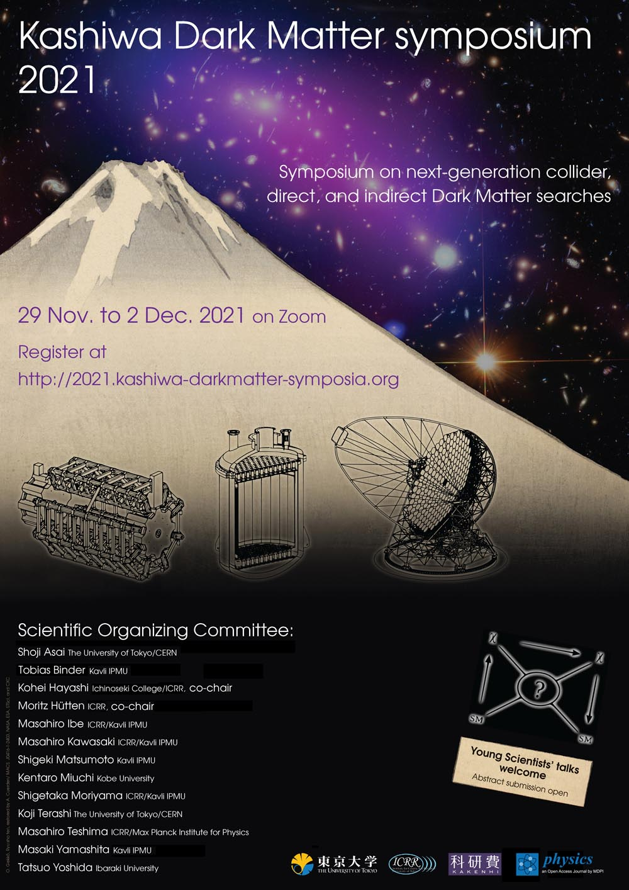

Kashiwa Dark Matter symposium 2021
November 29 - December 2, 2021
virtual #dm2021kashiwa
Updates
20/11: The registration is now closed. Thank you all for the registrations with your great interest!
09/11: Thanks a lot for all the great abstract submissions! Everybody who has submitted an abstract should have received today a notification upon oral or poster presentation acceptance. If you did not receive a notification, please contact loc@2021.kashiwa-darkmatter-symposia.org.
02/11: Abstract submission is now closed. Registration to join the presentation and discussions is still open until November 19, 2021, 23:59 UTC.
20/10: Abstract submission deadline has been extended to Monday, November 1st, 2021, 23:59 UTC
14/10: The session schedule and times are now fixed, see Schedule.
Rationale
After two successful symposia in 2019 and 2020, we are happy to announce the third edition of the Kashiwa Dark Matter symposium this fall to be hosted by the Institute for Cosmic Ray Research (ICRR) at the University of Tokyo. As in the past years, the symposium shall serve to exchange latest results between the various communities of experimental searches, particle physics theory, and astrophysics. Due to the ongoing COVID-19 pandemic, and to allow a worldwide inclusive and eco-friendly participation, we host again a virtual conference format.
The goal of the symposium series is to bring together international researchers from all relevant experimental and theoretical fields in current and future dark matter searches. This year, we will include a focused session on primordial black holes as Dark Matter candidates, covering theoretical and cosmological aspects, as well as experimental searches for them.
Main Topics:
- Dark matter theory
- Collider experiments for dark matter searches
- Dark matter direct detection experiments
- Dark matter indirect detection experiments
- Astrophysical constraints on dark matter
- Searches for Primordial Black Holes as DM candidates
We encourage especially young researchers and students to attend and to present at the symposium.
Highlight talks
- Katharina Behr (DESY)
- Torsten Bringmann (University of Oslo)
- Michele Doro (University of Padova)
- Anna Genina (Max Planck Institute for Astrophysics)
- Junji Hisano (KMI, Nagoya University)
- Silvia Manconi (RWTH Aachen)
- Teresa Marrodan (Max Planck Institute for Nuclear Physics)
- Yuto Minami (RCNP, Osaka University)
- Federica Petricca (Max Planck Institute for Physics)
- Antonio Palazzo (University of Bari)
- Masahiro Takada (Kavli IPMU, The University of Tokyo)
- Volodymyr Takhistov (Kavli IPMU, The University of Tokyo)
- Takashi Toma (Kanazawa University)
- Xiaopeng Zhou (Beihang University)
Schedule and format
The symposium will last 5 hours each day:
- On Monday and Tuesday, from 7:00 to 12:00 UTC (8:00 to 13:00 CET, 16:00 to 21:00 JST)
- On Wednesday and Thursday, from 9:00 to 14:00 UTC (10:00 to 15:00 CET, 18:00 to 23:00 JST)
| PST (West Coast) EST (East Coast) UTC CET JST |
23:00(-1) – 01:00 02:00 – 04:00 07:00 – 09:00 08:00 – 10:00 16:00 – 18:00 |
02:00 – 04:00 05:00 – 07:00 10:00 – 12:00 11:00 – 13:00 19:00 – 21:00 |
|
| Monday, Nov. 29 | Dark Matter Theory | 60 min. break |
Astrophysics & Cosmology |
| Tuesday, Nov. 30 | Primordial Black Holes | Direct Detection 1 | |
| PST (West Coast) EST (East Coast) UTC CET JST |
01:00 – 03:00 04:00 – 06:00 09:00 – 11:00 10:00 – 12:00 18:00 – 20:00 |
04:00 – 06:00 07:00 – 09:00 12:00 – 14:00 13:00 – 15:00 21:00 – 23:00 |
|
| Wednesday, Dec. 1 | Direct Detection 2 | Poster session |
Collider Searches |
| Thursday, Dec. 2 | Indirect Detection 1 | 60 min. break |
Indirect Detection 2 |
Registration and call for abstracts
The registration is now closed. Thank you so much for your registration with your interest!
The deadline of the call for abstracts was November 1st, 2021, 23:59 UTC. Applicants for contributed presentations was notified November 9 on the presentation's acceptance.
Organisational Committees
Scientific Organising Committee:
- Kohei Hayashi (Ichinoseki College/ICRR, the University of Tokyo; co-chair)
- Moritz Hütten (ICRR, the University of Tokyo; co-chair)
- Shoji Asai (The University of Tokyo/CERN)
- Tobias Binder (Kavli IPMU, the University of Tokyo)
- Masahiro Ibe (ICRR/Kavli IPMU, the University of Tokyo)
- Masahiro Kawasaki (ICRR/Kavli IPMU, the University of Tokyo)
- Shigeki Matsumoto (IPMU, the University of Tokyo)
- Kentaro Miuchi (Kobe University)
- Shigetaka Moriyama (ICRR/Kavli IPMU, the University of Tokyo)
- Koji Terashi (The University of Tokyo/CERN)
- Masahiro Teshima (ICRR/Max Planck Institute for Physics)
- Masaki Yamashita (Kavli IPMU, the University of Tokyo)
- Tatsuo Yoshida (Ibaraki University)
Local Organising Committee:
- Kohei Hayashi (Ichinoseki College/ICRR, the University of Tokyo)
- Moritz Hütten (ICRR, the University of Tokyo)
- Midori Sugahara (ICRR, the University of Tokyo)
Equal Opportunities Responsible:
- Tobias Binder (Kavli IPMU, the University of Tokyo)
We would also like to warmly thank Stephen Wilkins from the University of Sussex to provide us with a template of the website system. Please also check out the SAZERAC online conference series, using the same framework.
Poster
Please download and distribute
Code of Conduct
(Adapted from SAZERAC) Attendance at the Kashiwa Dark Matter symposium 2021 is a privilege, and attendees are expected to behave professionally. The symposium organisers are committed to providing an atmosphere that encourages the free expression and exchange of scientific ideas.
By participating in the Kashiwa Dark Matter symposium 2021 as an attendee or presenter, you agree to abide by this code of conduct. Failure to adhere to this code of conduct in all circumstances related to the symposium, including in the online sessions, or any in person, telephone, or other electronic communication, will result in removal from all symposium events.
Our scientific community values all members, regardless of (alphabetically) age, cultural background, disability, ethnicity, gender identity, marital status, nationality, physical appearance, political affiliation, pregnancy, race, religious beliefs, sexual orientation, socio-economic status, and status as a caregiver (including as a parent). The ability to allow our community to share its research results and promote the careers of junior attendees depends critically on maintaining a culture of inclusivity, where all voices are respected and heard.
The symposium organisers will not tolerate verbal, nonverbal harassment or bullying of any kind and will give high priority on eliminating sexual harassment in any form from the workplace. Behavior and language acceptable to one person may not be to another. Members must make every effort to ensure that words and actions communicate respect for others, regardless of opinion regarding the person or their scientific results.
During symposium sessions, the Session Chair is in charge. Speakers must keep to their allotted time, ideally using a timer. If they exceed their time, their question time will be reduced, and if they speak through all of the question time, they will be disconnected. As listener, when asking questions to speakers, please be professional, courteous, and polite. If a participant engages in obvious harassing behavior during the presentations, the Chairs may take any action they deem appropriate, including warning the offender or removing them from the conference.
Participants who believe that they have witnessed or been negatively impacted by a possible violation of the Code of Conduct should contact the Equal Opportunites Responsible by emailing tobias.binder@kashiwa-darkmatter-symposia.org to initiate a complaint, including any available evidence (e.g., screenshots) in their email. The Equal Opportunites Responsible will treat the appeal at maximum discretion and anonymity when discussing with SOC. If a majority of the SOC concurs that this code has been violated, the offender will be immediately removed from all symposium-related events. The offender will then be contacted by the SOC, and will have the opportunity to appeal the decision. This appeal will be considered by the SOC, whose decision will be final.
Sponsors
- This symposium is supported in part by:
- MEXT Grant-in-Aid for Scientific Research on Innovative Areas:
- Grant-in-Aid for Scientific Research (S):
- Grant-in-Aid for Scientific Research (B):
- Grant-in-Aid for Scientific Research (Early-Carrer Scientiests):
- Grant-in-Aid for Transformative Research Area A (Open-solicited Research):
16K21730 for Shoji Asai (PI, main hosts)
19H05802 for Shigetaka Moriyama (co-PI, main hosts)
18H05542 for Masahiro Ibe (PI)
17H06131 for Masahiro Teshima (PI, main hosts)
20H01895 for Shigeki Matsumoto (PI), Kohei Hayashi (co-PI), Tobias Binder (co-PI)
17H02878 for Shigeki Matsumoto (co-PI)
21K13909 for Kohei Hayashi (PI)
21H05447 for Kohei Hayashi (PI)
and the grant for ICRR’s Fiscal Year 2021 Inter-University Research Program (PI: Moritz Hütten)This year's prizes for the best contributed presentations will be kindly sponsored by Physics.
Contact Us
Please email us at loc@2021.kashiwa-darkmatter-symposia.org.